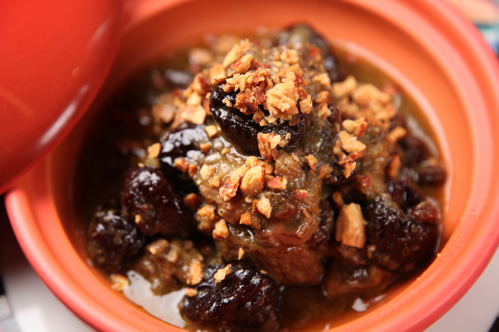

Pot Roast

Description
Pot roast made in the crock pot for an easy weeknight meal
Ingredients
1 large pot roast
1/4 cup dales seasoning
1/4 cup water
Steps
Add all ingredients to the crock pot and cook on low 8-10 hours.
Shred and server.